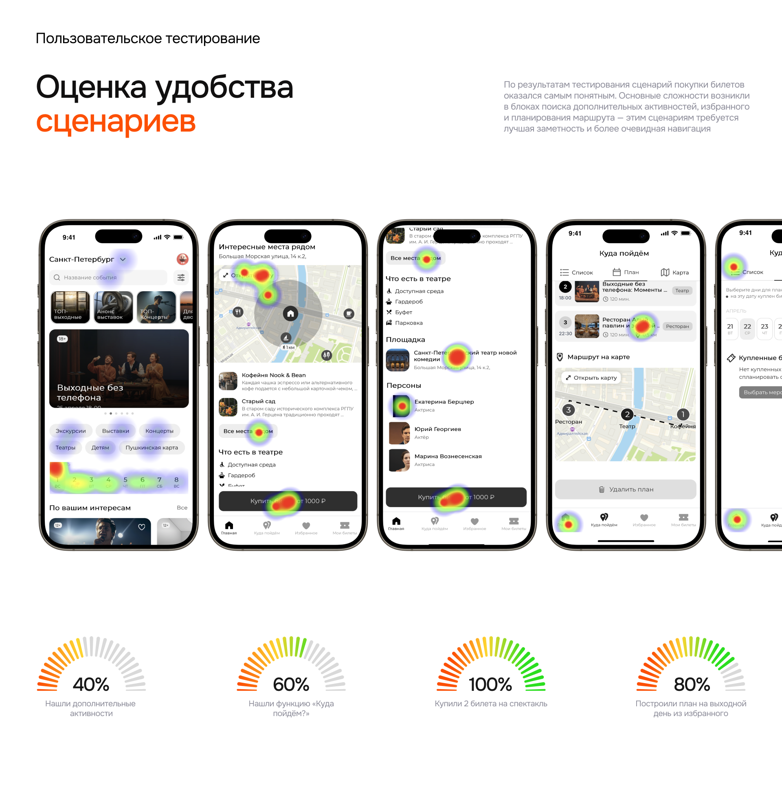
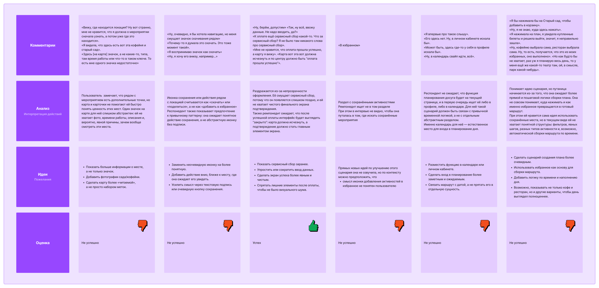
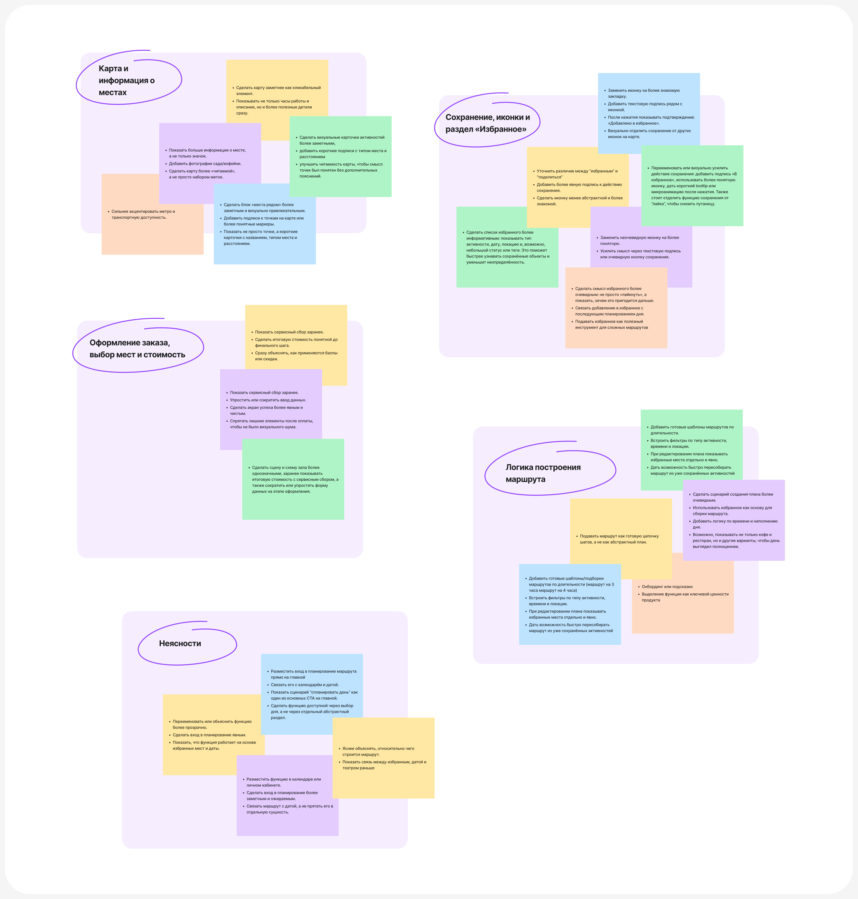

Методология
| Цель | Оценить понятность сценариев покупки билетов, работы с активностями, избранным и планированием. Найти проблемные точки, барьеры в понимании функций и оценить интуитивность навигации |
|---|---|
| Участники | 5 человек, 25–35 лет — молодые пары, любители культурных выходных |
| Формат | Модерируемое тестирование: думать вслух, задачи без подсказок. Часть участников — на смартфоне, часть — в веб-версии прототипа |
| Инструменты | Интерактивный прототип в Figma, запись экрана, заметки модератора, тепловые карты в Maze |
| Метрики | Успешность задачи, время, количество кликов, ошибки, вербальные комментарии |
| Ограничения | Небольшая выборка, не все функции прототипа работали полноценно, разные устройства могли влиять на опыт |
Сценарии тестирования
Сценарий 1. Представьте, что планируете провести весь день 25 апреля с партнёром. Вы нашли спектакль и открыли его страницу. Оцените, достаточно ли информации для покупки, купите 2 билета и проверьте, можно ли на этой странице спланировать остаток дня.
Сценарий 2. На предыдущем шаге вы сохраняли понравившиеся места. Найдите, где они хранятся, и составьте из них план на выходной.
Дебрифинг: насколько сложной была покупка, помогает ли карта «интересных мест рядом», насколько полезна фича «Куда пойдём?», стали бы вы ей пользоваться.
Результаты
| Задача | Мария | Ксения | Сергей | Григорий | Дмитрий | Итог |
|---|---|---|---|---|---|---|
| Найти активности рядом с событием | ❌ | ❌ | ❌ | ✅ | ✅ | 40% |
| Добавить активность в избранное | ❌ | ❌ | ✅ | ✅ | ✅ | 60% |
| Купить 2 билета на спектакль | ✅ | ✅ | ✅ | ✅ | ✅ | 100% |
| Найти раздел «Избранное» | ❌ | ❌ | ✅ | ✅ | ✅ | 60% |
| Найти функцию «Куда пойдём?» | ❌ | ❌ | ✅ | ✅ | ✅ | 60% |
| Построить план из избранного | ❌ | ✅ | ✅ | ✅ | ✅ | 80% |
| Успешность | 1/6 | 2/6 | 5/6 | 6/6 | 6/6 |

Сценарий покупки билетов оказался самым понятным — 100% успеха. Основные сложности возникли в поиске дополнительных активностей, избранном и планировании маршрута: этим сценариям нужна лучшая заметность и более очевидная навигация.
Что услышали
«Здесь, на карте, значок, а не какие-то время работы или что-то в таком ключе. Одного значка недостаточно.»
«Я воспринимаю этот значок как „скачать“.»
«К оплате ещё сервисный сбор? Я не было там про сервисный сбор.»
Проблемы и решения
🗺️ Карта и информация о местах
Проблема: точки на карте абстрактны, не видно ценности мест рядом.
- Показывать не значок, а короткие карточки: название, тип места, расстояние, фото
- Сделать блок «Места рядом» заметнее, а карту — явно кликабельной
- Сильнее подсветить метро и транспортную доступность
🔖 Сохранение, иконки и раздел «Избранное»
Проблема: иконку сохранения путают со «скачать» и «поделиться», смысл избранного неочевиден.
- Заменить иконку на привычную закладку, добавить подпись «В избранное» и подтверждение после нажатия
- Отделить сохранение от «лайка» и «поделиться»
- Показывать в избранном тип, дату и локацию; связать избранное с планированием дня
🧭 Логика построения маршрута
Проблема: план воспринимается как абстракция, неясно, из чего он строится.
- Подавать маршрут как готовую цепочку шагов
- Добавить шаблоны по длительности: маршрут на 3 или 4 часа
- Фильтры по типу активности, времени и локации; явно показывать избранные места при редактировании
- Добавлять не только кафе и рестораны, чтобы день выглядел полноценнее
💳 Оформление заказа, выбор мест и стоимость
Проблема: сервисный сбор появляется слишком поздно, экран успеха перегружен.
- Показывать сбор и итоговую стоимость заранее, объяснять, как применяются баллы и скидки
- Сократить форму данных
- Сделать экран успешной оплаты чистым: подтверждение — главный элемент
❓ Неясности с входом в планирование
Проблема: раздел «Куда пойдём?» воспринимается как отдельная абстрактная сущность.
- Разместить вход в планирование на главной как один из основных CTA — «Спланировать день»
- Связать маршрут с календарём и датой купленного билета
- Объяснить, что функция работает на основе избранного и даты
Как работал с данными
По каждому участнику я собирал доску: комментарии → анализ (интерпретация действий) → идеи → оценка по каждой задаче. Затем идеи всех участников разложил по кластерам — из них и вырос план v2.

